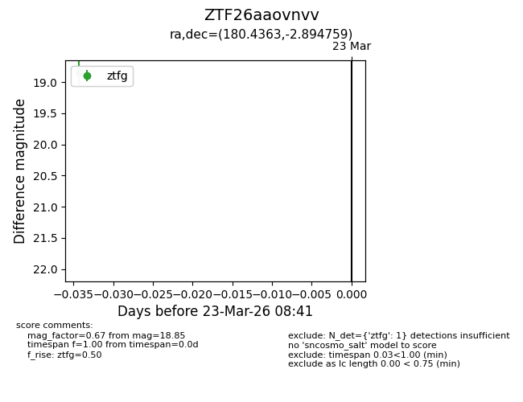
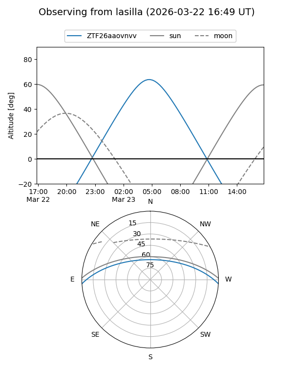
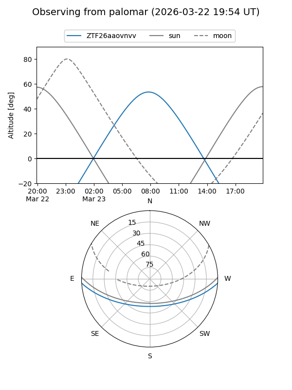

ZTF26aaovnvv
Target ZTF26aaovnvv at 2026-03-23 08:43
Aliases and brokers:
FINK: link
Lasair: link
ALeRCE: link
alt names
ZTF26aaovnvv (ztf,fink_ztf)
Coordinates:
equatorial (ra, dec) = 180.4363,-2.89476
equatorial (HMS+DMS) = 12:01:44.71,-02:53:41.13
galactic (l, b) = (279.2418,+57.67326)
Flags:
Photometry:
last ztfg=18.85
1 ztfg detections
Lightcurve

Visibility


Additional plots